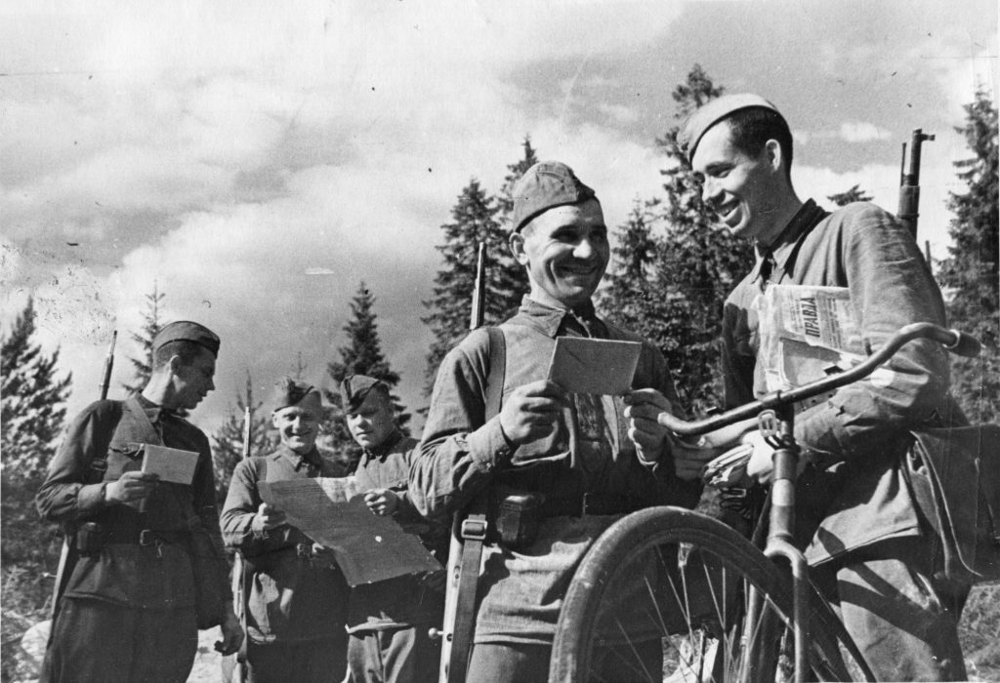

Литература в ВОВ
Великая Отечественная война – событие, которое отразилось на судьбе всей России. Каждый в той или иной степени коснулся ее. Художники, музыканты, писатели и поэты также не остались равнодушными к судьбе своей страны.

Роль литературы в годы ВОВ
Литература стала тем, что давало надежду людям, давало силы бороться дальше и идти до конца. Именно в этом и определялась цель данного вида искусства. С первых дней фронта писатели говорили об ответственности за судьбу России, о тех страданиях и лишениях, которые терпели люди. Многие писатели уходили на фронт корреспондентами. В то же время неоспоримым было одно – беспрепятственная вера в победу, которую ничто не могло сломить.